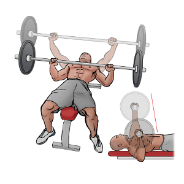
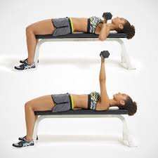
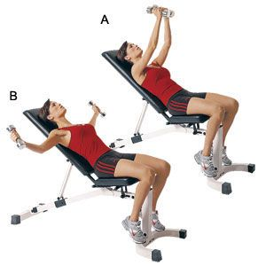
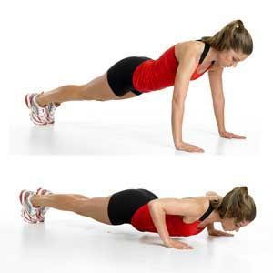

When you're training the chest, the grip and hand positions are essential, especially to avoid injury. Having your arms wider than shoulder width is recommended, the best grip is to have your hands in a 'C' shape to avoid straining your wrists
Bench press - this can be done with a flat, incline or decline position. Position your hands just wider than shoulder width, with your arms in a 'C' shape. Push the bar up and slowly lowering to your chest, repeat this for 8-12 reps
Dumbbell Press - this is similar to the bench press, only with dumbells instead. The best grip for this is to have your thumbs over the bar making an 'O' shape. Push the dumbbells up above your chest, bringing them back down to the side of your chest. 8-12 reps are recommended.
Dumbbell flyes - using the same grip as the dumbbell press, have your palms facing each other, bring the dumbbells together and lowering them with your arms out wide and push them together so the dumbbells meet at the top
Pushups - place your palms on the ground at shoulder width, keep your back straight, push yourself up until your arms are straight, them lower yourself to the ground again, do this for as many reps as possible
